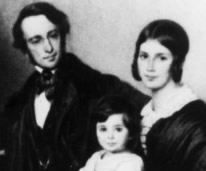

###. Nucleic Acids & Heredity
One of the amazing facts associated with Darwin and Wallace’s original evolutionary hypothesis was their complete lack of a coherent understanding of genetic mechanism.
While it was clear that organisms varied, and that part of that variability was inherited, the mechanism by which genetic information was stored and transmitted was completely unclear.
Beginning with the work of Gregor Mendel in the 19th century, which was rediscovered and built upon beginning in the early part of the 20th century, it became obvious that hereditary “factors” - which became known as genes, were present as discrete objects that could be passed (generally) unchanged from generation to generation.
Specific genes could exist in different forms, known as alleles. In higher organisms, two copies of each gene were present, one copy inherited from the maternal parent, the other from the paternal parent.
It was, however, unclear what genes were made of, and how they stored information.
Discovering how nucleic acids store genetic information
Nucleic acids were first isolated as part of the phosphorus-rich compound nuclein from pus and sperm by Friedrich Miescher.

Figure: Miescher and family. Click the image to learn more
Later nuclein was resolved into an acidic component, nucleic acid,and a basic component, primarily proteins known as histones.
Eukaryotic cells contain a distinct structure, the nucleus, where nuclein was localized.
During cell division, the nucleus appeared to be replaced by densely staining bodies, known as chromosomes.
In 1887 Edouard van Beneden (below) reported that the number of chromosomes was a constant for each species.
Different species had different numbers of chromosomes.
In 1902, Walter Sutton published his observation that chromosomes obey Mendel’s rules of inheritance.
This strongly suggested that Mendel’s genetic factors were associated with the chromosomes.
That hereditary information was localized to nuclei was further suggested by a number of observations, particularly the transplantation experiments carried out by Joachim Hammerling in the 1930’s.

He showed that the information needed to control the morphology of the giant unicellular green alga Acetabularia, the mermaid’s wineglass (above), was located within the region of the cell that contained the nucleus.
The proof that DNA was the genetic material came from a series of experiments initiated in the 1920s by Fred Griffith.
He was studying two strains of the bacterium Streptococcus pneumoniae.
The two strains differed in the nature of the colonies they formed; in one case the colonies were smooth, in the other case, the colonies were rough.

Figure: Smooth (left) and rough (right) Streptococcus pneumoniae
He found that when cells of the smooth colony S strain were injected into mice the mice quickly sickened and died.
However, during extended cultivation in vitro, the S strain sometimes gave rise to rough (R) colonies.
Mice injected with R strain bacteria did not get sick.
Likewise, mice injected with heat killed S strain bacteria also did not get sick. BUT, weirdly enough, mice co-injected with the living R and dead S bacteria got sick and died! From these dying mice, he isolated a new pathogenic smooth strain, which he termed S-II.
His hypothesis was that a non-living component derived from the dead S bacteria had “transformed” the avirulent (benign) R strain into the virulent S-II strain.
The molecular basis of transformation:
In 1944, these studies were followed up by Oswald Avery, Colin McLeod and Maclyn McCarty. They set out to use Griffith’s assay to isolate the transforming principle responsible for turning R into S strains.
Their approach was to make cell extracts; they ground up cells and isolated various components (such as proteins, nucleic acids, carbohydrates, lipids).
They then digested (i.e., enzymatically destroyed) these extracts with various enzymes and asked whether the transforming principle was still intact.
Treating cellular extracts with proteases, which degrade proteins lipases, which degrade lipids, or RNAases, which degrade RNAs had no effect on transformation.
In contrast, treatment of the extracts with DNAase, which degrades DNA, destroyed the activity.
Furthermore, purification of the transforming substance suggested that it had the properties of DNA and subsequent studies confirmed this conclusion.
DNA isolated from R strain bacteria did not produce S-strain bacteria, whereas DNA from S strain bacteria could transform R into S.
They concluded that DNA derived from S cells contains the information required for the conversion – it is a gene or part of one.

Horizontal gene transfer:
The process of transformation, the picking up and integrating of DNA from the environment (as occurred during Griffith’s experiments) is thought to have played a key role in early evolution and in the rapid evolution of bacteria today.
Figure: Bacteria can integrate foreign DNA into their genome.
In the modern world, the rapid spread of antibiotic resistance is due to horizontal gene transfer. Genes encoding factors involved in antibiotic resistance are released from dying bacteria, and can be acquired by their neighbors.
When we analyze the total DNA of an organism, its genome, we find evidence for horizontal gene transfer, particularly within the bacteria and archaea.
Questions to answer
Questions to ponder